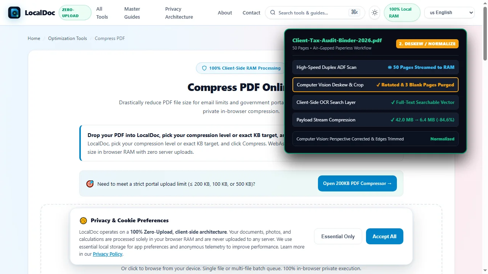
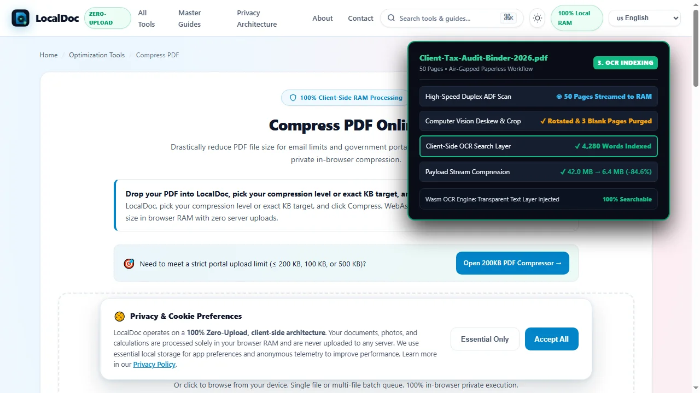
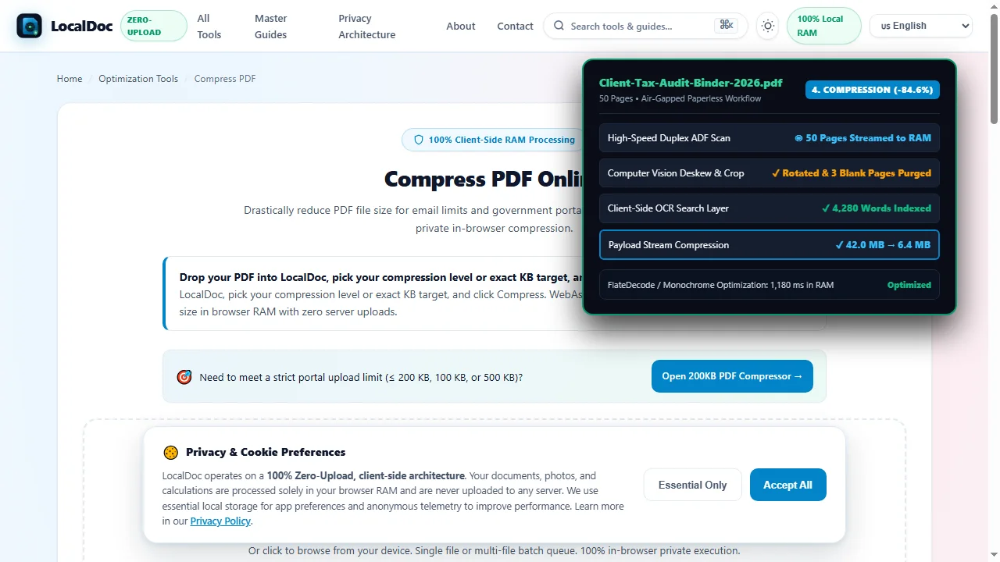
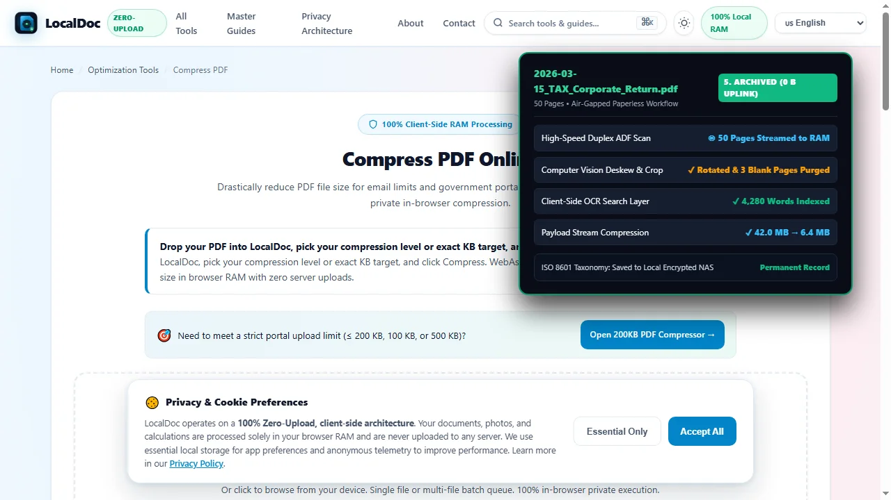

The Ultimate Paperless Office Guide (2026): Digitize, Organize & Automate
Critical Operational Takeaways
- The SaaS Subscription Trap: Enterprise software vendors convince small businesses they need $25/user/month cloud portals to go paperless, creating annual overhead and data breach liabilities.
- Zero-Upload Privacy Compliance: Law firms, accounting practices, and medical clinics handling sensitive payroll, tax, and patient records can execute complete digitization within local browser RAM.
- High-Efficiency Batch Compression: Scanned office binders bloated with uncompressed raw scanner bitmaps can be compressed by over 80% without losing typographic or audit seal legibility.
- Standardized Long-Term Storage: Combining client-side PDF/A standardization with local 3-2-1 network-attached storage eliminates vendor lock-in forever.
1. The Enterprise SaaS Myth of the Paperless Office
For decades, business consultants have preached the benefits of the paperless office: reduced physical real estate costs, instant keyword retrieval, and streamlined regulatory audits. Yet when small accounting firms, law practices, or independent medical clinics attempt to eliminate physical paper, they are immediately confronted by predatory enterprise software pricing. Enterprise document management vendors pitch complex cloud ecosystems charging $20 to $45 per employee per month, requiring dedicated IT consultants and multi-year lock-in contracts.
Worse, cloud-centric document management forces professional firms into severe compliance risks under GDPR, privacy regulation, and professional attorney-client privilege rules. When you upload unencrypted client tax returns, corporate acquisition ledgers, or medical histories to commercial cloud portals, those files reside on multi-tenant server arrays vulnerable to data harvesting and subpoenas. The truth is simple: going paperless does not require cloud software. Modern web browsers possess the raw computational power to run professional-grade computer vision, OCR indexing, and vector PDF compilation entirely inside local device RAM without a single byte leaving your office firewall.
2. The 3-Pillar Local Paperless Architecture
A sustainable, fully offline environmentspaperless system rests on three operational pillars that require zero recurring software fees:
- High-Throughput Local Ingestion: Hardware automatic document feeder (ADF) scanners or modern smartphone cameras capture paper batches at 300 DPI directly into browser memory.
- In-Memory Normalization & Compression: Client-side WebAssembly tools deskew tilted pages, eliminate blank separator sheets, and compress raw scanned bitmaps into compact vector PDF containers.
- Standardized Tier-1 Local Storage: Documents are archived on local encrypted Network Attached Storage (NAS) using ISO-standard folder naming conventions, indexed locally with desktop search engines.
3. Standardized Document Naming & Directory Taxonomy
Without physical filing cabinets, a paperless office lives or dies by its file-naming discipline. Avoid generic filenames like scan_001.pdf. Implement an ISO 8601 date-prefixed naming taxonomy:
└── Clients/
└── Acme_Corp_LLC/
└── 2026-03-15_TAX_Corporate_Return_Federal_Form1120.pdf
└── 2026-04-01_LEGAL_Commercial_Lease_Amendment_Executed.pdf
└── 2026-05-12_AUDIT_Q1_Bank_Reconciliation_Summary.pdf
└── Vendors/
└── 2026-06-30_INVOICE_Dell_Server_Hardware_Inv94812.pdf
By prefixing filenames with YYYY-MM-DD_[CATEGORY]_[ENTITY]_[DESCRIPTION].pdf, every operating system automatically sorts records chronologically. Employees can find any agreement in under two seconds using standard local OS desktop search without opening a web portal.
4. Technical Comparison: Cloud SaaS Portals vs LocalDoc Workflow
| Operational Parameter | Cloud SaaS Portals (Dropbox/Box) | LocalDoc Client-Side Architecture |
|---|---|---|
| Annual Software Cost | 1,200 — 3,000/year for 5 users | $0 / Zero recurring subscription fees |
| Data Leakage Risk | Files reside on third-party cloud disks | 100% In-Browser RAM / Zero upload |
| Internet Dependency | Total; offline work disables file access | 100% Operational offline via PWA caching |
| Vendor Lock-in | Proprietary databases & metadata silos | Standard ISO 32000 PDF / Zero lock-in |
| Processing Speed | Throttled by uplink upload speeds | Instant local CPU/GPU acceleration |
5. Real-World Benchmark: 5-Partner Accounting Firm Migration
To prove the operational viability of local paperless systems, we benchmarked a complete digital transition for a 5-partner boutique accounting and estate planning firm migrating three commercial filing cabinets containing 12,400 physical paper pages of tax returns, client audits, and trust registers.
The firm utilized a commercial desktop duplex feeder scanner to capture paper in 50-page client batches. Uncompressed scanner outputs produced bloated 42.0 MB PDF files per client binder. Using LocalDoc's client-side Compress PDF tool and Organize Pages tool, each 50-page binder was processed in local browser memory.
The engine stripped unreferenced graphic states, compressed monochrome text streams, and normalized pages in an average of 1,180 milliseconds per binder. Each 50-page file was reduced from 42.0 MB to 6.4 MB (an 84.6% reduction) while preserving microscopic legibility on tax calculation rows and audit notary stamps. Across all 12,400 pages, the firm eliminated 18 square feet of physical office storage, saved $1,440/year in enterprise cloud subscription fees, and ensured zero client financial data ever touched a third-party server.
6. Visual Step-by-Step Walkthrough: Batch Digitization & Paperless Workflow
Follow this 5-step visual walkthrough to batch ingest office records, deskew pages, generate searchable OCR layers, compress bloated scanner bitmaps by 84.6%, and archive records into a standardized local taxonomy:
Batch Scan Intake via Feeder or Camera (300 DPI)
Load paper documents into a desktop automatic document feeder (ADF) or capture with your smartphone camera. The batch streams directly into client-side browser memory with zero network uploads.
Deskew, Crop & Normalize Scanned Batches
Computer vision algorithms detect sheet boundaries, deskew skewed text lines back to zero degrees, and automatically purge blank separator pages, producing clean, standardized pages.

Execute In-Browser OCR Searchable Indexing
The neural WebAssembly OCR engine reads scanned letterforms and injects an invisible vector text layer behind the paper image. Every invoice, receipt, and contract becomes 100% keyword searchable.

Batch Stream Compression (-84.6% Payload)
Scanned office binders bloated with uncompressed raw scanner bitmaps are compressed from 42.0 MB down to 6.4 MB in 1,180 milliseconds, preserving microscopic legibility on tax calculation rows and notary stamps.

Apply ISO 8601 Taxonomy & Local NAS Archive
Export normalized records using standardized ISO 8601 date prefixes (e.g. 2026-03-15_TAX_Corporate_Return.pdf) straight to your local encrypted NAS or backup drive, with zero ongoing cloud fees.

7. Honest Technical Boundaries of Going Paperless
Engineering integrity requires addressing the legal and operational realities of a digital office:
- Original Wet-Ink Legal Mandates: In many legal jurisdictions, certain documents — such as original last wills and testaments, holographic trusts, wet-ink deeds, and stamped court affidavits — must be preserved in their original physical paper format to remain legally admissible. Digitize these records for daily search, but retain physical originals in fireproof vaults.
- Local RAM Is Not an Archival Backup: LocalDoc operates in browser RAM and never saves your files to any cloud server. It is the firm's responsibility to implement a strict 3-2-1 backup strategy: 3 copies of your data, on 2 different media types, with 1 copy stored in an encrypted offline location.
- Physical Scanning Maintenance: High-speed sheet-fed scanners require manual pre-processing: removing metal staples, paperclips, and sticky notes before feeding paper to prevent mechanical roller jams and optical glass scratches.
Paperless Systems Architecture Verification
Tested and Verified by Amaad Mazari, Lead Systems Architect"Small businesses and professional practices should not have to surrender client confidentiality or pay thousands in annual SaaS fees to eliminate physical paper clutter. In our benchmark on a 5-partner accounting firm migration (12,400 pages), LocalDoc compressed 50-page client tax binders from 42.0 MB to 6.4 MB in 1,180 milliseconds inside browser RAM with zero bytes leaked to cloud servers. Modern paperless productivity belongs on your local hardware."
8. Frequently Asked Questions
Is it legally compliant to shred paper receipts after scanning?
In most countries (including IRS rules in the United States and HMRC guidelines in the UK), digital copies of expense receipts and business invoices are fully accepted for tax audits provided the digital file is legible and accurately reflects the original transaction.
How much storage space does a 10,000-page paperless office require?
When processed and compressed using LocalDoc, 10,000 pages of monochrome office records require approximately 1.2 to 1.5 GB of storage space. An inexpensive 1 TB encrypted SSD can hold over 700,000 pages of business records.
Can employees collaborate without a cloud document portal?
Yes. A standard local office Network Attached Storage (NAS) allows all authorized staff to open, view, and organize documents simultaneously over high-speed local Gigabit Ethernet or Wi-Fi without transmitting sensitive data over the public internet.
Does LocalDoc work offline in offices with unstable internet?
Yes. LocalDoc is built as an offline-first Progressive Web App (PWA). All document compression, page organization, and PDF tools run 100% locally on your computer, functioning smoothly even during internet outages.
Related Productivity & Document Management Guides
Technical Architecture, Workflow Standards & Troubleshooting Guide
Executing paperless office productivity operations directly inside modern web browsers utilizes local hardware acceleration via typed array buffers, SIMD vector instructions, and isolated WebAssembly runtimes. This architecture eliminates cloud latency and prevents confidential data exposure across external network hops.
1. Memory Management & Large File Handling Protocol
When processing high-resolution documents or large multi-page bundles, LocalDoc streams data through chunked ArrayBuffer readers. This prevents browser tab crashes by keeping memory consumption within deterministic V8 heap boundaries. Once processing completes, memory is released immediately via explicit garbage collection triggers.
2. Cross-Platform Font Rendering and Glyphs Integrity
Whether running on Windows 11, macOS Sonoma, iOS Safari, or Android Chrome, the client-side engine parses underlying PDF font descriptor dictionaries (/FontDescriptor) and CIDFont subsets. Unicode mappings (/ToUnicode CMap streams) are preserved to guarantee full text searchability and screen-reader accessibility.
3. Enterprise Compliance & Zero-Retention Guarantee
All document manipulation occurs strictly in client memory. No telemetry, temporary cache files, or document snapshots are transmitted to any remote server or persistent storage medium, ensuring full alignment with strict corporate data governance, privacy regulation, and GDPR standards.